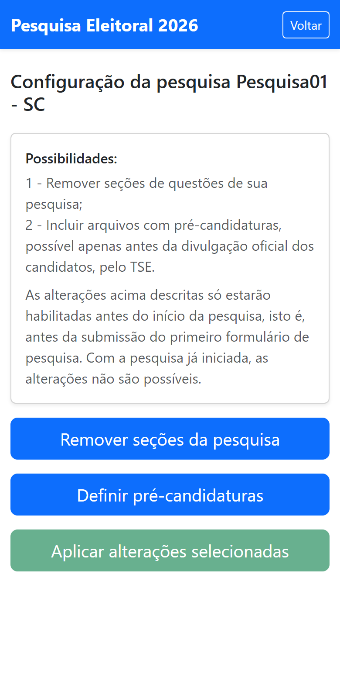

Parte 3 — Modo de operação
10. Configurar o questionário
Em Configurar pesquisa você ajusta o questionário que os entrevistadores vão aplicar. Duas possibilidades: remover seções inteiras e inserir listas de pré-candidaturas.

10.1 Remover seções
Toque em Remover seções da pesquisa. Marque as seções que deseja manter e desmarque as que quer remover; o aplicativo mostra as perguntas de cada seção para ajudar na decisão. Toque em Salvar.
10.2 Definir pré-candidaturas
Toque em Definir pré-candidaturas para carregar as listas de pré-candidatos
que aparecerão como opções de resposta (Presidente, Governador, Senador, Deputado Federal e
Estadual). Cada lista é um arquivo de texto (.txt) com um nome por linha.
10.3 Aplicar as alterações
As mudanças ficam guardadas até você confirmá-las. Quando estiver decidido(a), toque em Aplicar alterações selecionadas — só então elas passam a valer no questionário. Enquanto houver mudanças não aplicadas, um aviso amarelo lembra você.
É sua responsabilidade conferir, antes de iniciar a coleta, que o questionário configurado corresponde exatamente ao que você pretende registrar na Justiça Eleitoral.